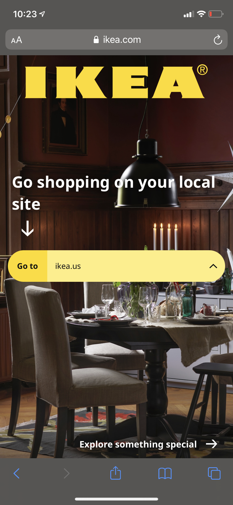
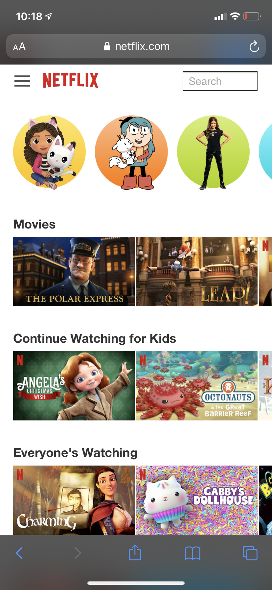

Fitt's Law
Ikea | IKEA.com
On the home page for Ikea, the selector bar for location is noticeably larger than the "Go to" button. This size difference allows the target area to be the selector.
Hick's Law
Netflix | Netflix.com
The homepage for the kid selection in Netflix is an amazing example of Hick's Law. A user, especially one so young, could be overwhelmed by all the options. Netflix has done an amazing job at providing filters and naturally grouping movies and shows together for easy viewing.
Rule of Thirds
Goodreads | Goodreads.com